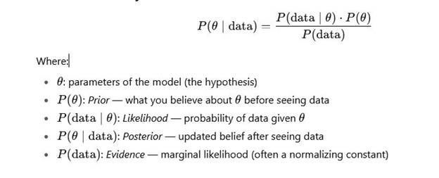
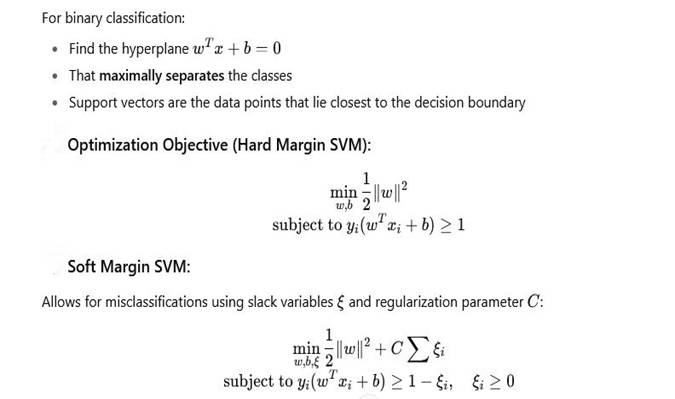
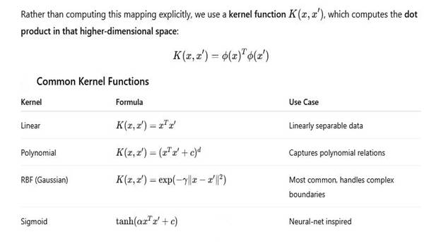
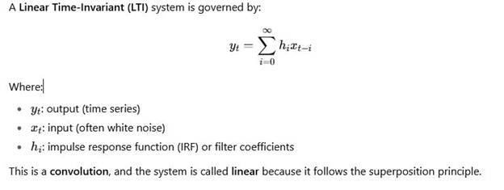
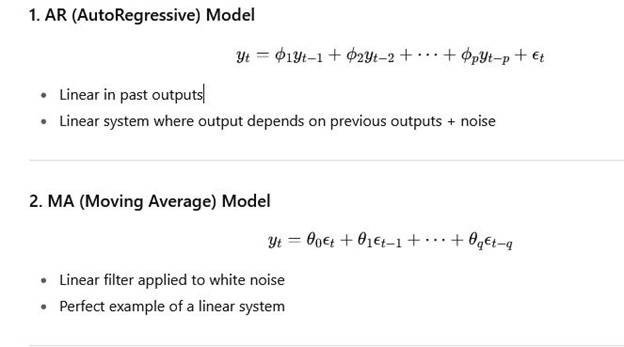
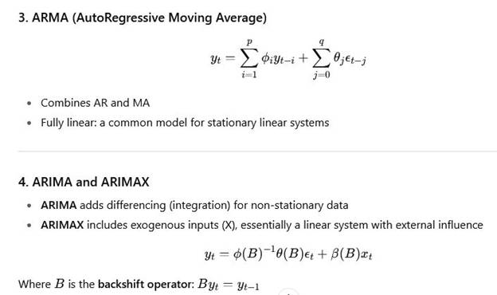
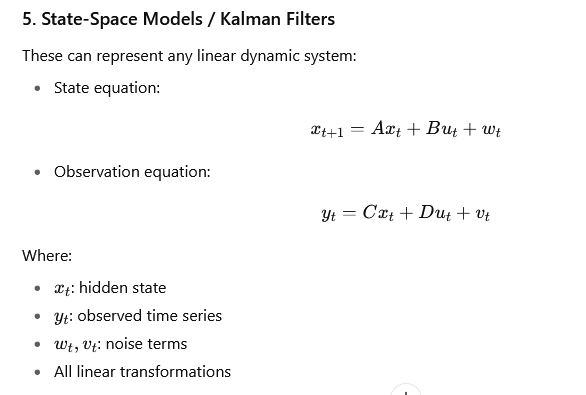
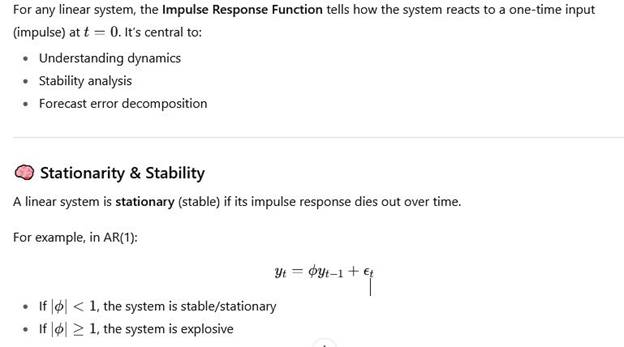
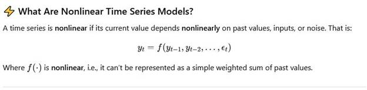
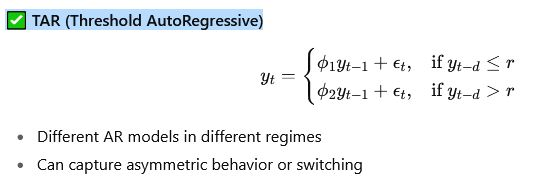

Regression modeling is a statistical technique used to examine the relationship between one dependent variable (target) and one or more independent variables (predictors or features).
It helps you:
· Predict outcomes
· Understand relationships
· Forecast trends
· Make data-driven decisions
1. Linear Regression
o Simple Linear Regression: One independent variable
y=β0+β1x+ε
Multiple Linear Regression:
Multiple independent variables
y=β0+β1x1+β2x2+⋯+βnxn+ε
2. Polynomial Regression
o Fits a non-linear curve using polynomial terms of predictors.
3. Logistic Regression
o For binary classification problems (output is 0 or 1).
4. Ridge, Lasso, and Elastic Net Regression
o Regularized models to prevent overfitting.
o Ridge adds L2 penalty, Lasso adds L1 penalty, and Elastic Net combines both.
5. Nonlinear Regression
o Models a nonlinear relationship directly between variables.
6. Quantile Regression
o Estimates the conditional median or other quantiles of the response variable.
· Dependent variable (y): What you want to predict
· Independent variables (X): The features used for prediction
· Coefficients (β): Represent the strength and direction of the relationship
· Residuals (ε): Difference between predicted and actual values
1. Linearity: Relationship between X and y is linear
2. Independence: Observations are independent
3. Homoscedasticity: Constant variance of residuals
4. Normality: Residuals are normally distributed
5. No multicollinearity: Independent variables should not be highly correlated
· R-squared (R²): Proportion of variance explained by the model
· Adjusted R²: Adjusts R² for the number of predictors
· MSE (Mean Squared Error)
· RMSE (Root Mean Squared Error)
· MAE (Mean Absolute Error)
from sklearn.linear_model import LinearRegression
from sklearn.model_selection import train_test_split
from sklearn.metrics import mean_squared_error
# Sample dataset
X = df[['feature1', 'feature2']]
y = df['target']
# Train-test split
X_train, X_test, y_train, y_test = train_test_split(X, y, test_size=0.2, random_state=42)
# Fit model
model = LinearRegression()
model.fit(X_train, y_train)
# Predict
y_pred = model.predict(X_test)
# Evaluate
mse = mean_squared_error(y_test, y_pred)
print(f"MSE: {mse}")
Multivariate Analysis (MVA) refers to a set of statistical techniques used to analyze data that arises from more than one variable. It's often used to understand the relationships between variables and to reduce dimensionality.
If you're working with more than two variables, you're in the territory of multivariate statistics.
· To understand interactions between variables
· To control for confounding variables
· To reduce data complexity (dimensionality reduction)
· To classify, predict, or cluster observations
· To visualize high-dimensional data
Used to predict a continuous outcome from multiple predictors.
Example:
Predicting house price using square footage, number of bedrooms, and location.
Extension of ANOVA when there are multiple dependent variables.
Example:
Studying how education level affects both income and job
satisfaction.
Used for dimensionality reduction — reduces the number of variables while preserving variance.
Example:
Reducing hundreds of customer survey questions into a few latent factors.
Similar to PCA, but assumes that observed variables are influenced by latent (unobserved) factors.
Example:
Identifying underlying psychological traits from questionnaire data.
Examines the relationship between two sets of variables.
Example:
Relating academic performance (GPA, test scores) with psychological factors
(motivation, anxiety).
Groups observations into clusters based on similarity across multiple variables.
Example:
Customer segmentation using age, income, and purchasing behavior.
Used for classification — predicts group membership based on predictor variables.
Example:
Predicting whether a patient has a disease based on blood test results.
Used to visualize similarity or dissimilarity in data — places objects in geometric space based on distance/similarity.
from sklearn.decomposition import PCA
from sklearn.preprocessing import StandardScaler
# Standardize the features
scaler = StandardScaler()
X_scaled = scaler.fit_transform(X)
# Apply PCA
pca = PCA(n_components=2)
X_pca = pca.fit_transform(X_scaled)
# Explained variance
print(pca.explained_variance_ratio_)
When to Use Multivariate Analysis?
|
Situation |
Recommended Technique |
|
Predict continuous outcome with multiple predictors |
Multiple Linear Regression |
|
Analyze multiple dependent variables |
MANOVA |
|
Reduce number of variables |
PCA / Factor Analysis |
|
Classify into categories |
Discriminant Analysis |
|
Explore natural groupings |
Cluster Analysis |
|
Study relationships between variable sets |
CCA |
Bayesian modeling is a statistical approach that uses Bayes’ Theorem to update the probability of a hypothesis as more evidence or information becomes available. It provides a probabilistic framework to reason under uncertainty.

1.
Specify a prior
What do you already believe about the parameters?
2.
Collect data
Observe real-world data (evidence).
3.
Compute the likelihood
How likely is the data under your current model?
4.
Update your beliefs
Use Bayes’ Theorem to compute the posterior.
5.
Make predictions
Use the posterior to make probabilistic predictions
· Incorporates prior knowledge
· Quantifies uncertainty explicitly
· Handles small data better than frequentist methods
· Produces distributions over parameters (not just point estimates)
· Flexible and interpretable
Bayesian vs Frequentist
|
Feature |
Bayesian |
Frequentist |
|
Prior beliefs |
Used explicitly |
Not used |
|
Output |
Posterior distribution |
Point estimates, p-values |
|
Interpretation |
Probabilistic |
Fixed parameters |
|
Flexibility |
Very flexible (e.g., priors) |
More rigid |
Example: Bayesian Linear Regression (Using PyMC)
import pymc as pm
import numpy as np
# Simulate some data
np.random.seed(42)
X = np.random.normal(0, 1, 100)
y = 3 * X + np.random.normal(0, 1, 100)
with pm.Model() as model:
# Priors
alpha = pm.Normal("alpha", mu=0, sigma=10)
beta = pm.Normal("beta", mu=0, sigma=10)
sigma = pm.HalfNormal("sigma", sigma=1)
# Likelihood
mu = alpha + beta * X
y_obs = pm.Normal("y_obs", mu=mu, sigma=sigma, observed=y)
# Inference
trace = pm.sample(1000, tune=1000)
pm.summary(trace).round(2)
Inference and Bayesian Network:
A Bayesian Network (BN) is a graphical model that represents a set of variables and their conditional dependencies via a Directed Acyclic Graph (DAG).
· Nodes represent random variables
· Edges represent probabilistic dependencies
· Each node has a Conditional Probability Distribution (CPD)
Bayesian Networks are a compact way to represent a joint probability distribution over many variables.
Let’s say we have:
· Rain (R)
· Sprinkler (S)
· Wet Grass (W)
Structure:
R → W ← S
This means:
· Wet grass depends on Rain and Sprinkler
· Rain and Sprinkler are independent
So the joint probability is:
P(R,S,W)=P(R)⋅P(S)⋅P(W∣R,S)
· Medical diagnosis
· Decision support systems
· Fault detection
· Natural language processing
· Risk analysis
Inference is the process of computing the probability of unknown variables given observed evidence.
1. Marginal Inference:
o Compute the probability distribution of a variable by summing out others.
o Example: What is P(W)P(W)P(W)?
2. Conditional Inference:
o Compute the probability of a variable given evidence.
o Example: What is P(R∣W=true)P(R \mid W = \text{true})P(R∣W=true)?
· Variable Elimination: Systematically sums out variables
· Belief Propagation: Message-passing in tree-structured networks
· Sampling Methods:
o Monte Carlo Sampling
o Gibbs Sampling
o Rejection Sampling
These are used when exact methods are too computationally expensive.
pgmpy)from pgmpy.models import BayesianModel
from pgmpy.factors.discrete import TabularCPD
from pgmpy.inference import VariableElimination
# Define the model structure
model = BayesianModel([('Rain', 'WetGrass'), ('Sprinkler', 'WetGrass')])
# Define CPDs
cpd_rain = TabularCPD('Rain', 2, [[0.2], [0.8]])
cpd_sprinkler = TabularCPD('Sprinkler', 2, [[0.1], [0.9]])
cpd_wetgrass = TabularCPD(
variable='WetGrass',
variable_card=2,
values=[[0.99, 0.9, 0.9, 0.0], # P(WetGrass=False | ...)
[0.01, 0.1, 0.1, 1.0]], # P(WetGrass=True | ...)
evidence=['Rain', 'Sprinkler'],
evidence_card=[2, 2]
)
# Add CPDs to the model
model.add_cpds(cpd_rain, cpd_sprinkler, cpd_wetgrass)
# Check model validity
print("Model is valid:", model.check_model())
# Perform inference
infer = VariableElimination(model)
posterior = infer.query(variables=['Rain'], evidence={'WetGrass': 1})
print(posterior)
· Bayesian Networks let you represent knowledge compactly using conditional dependencies.
· Inference lets you compute beliefs given observed data.
· This is key in decision-making under uncertainty.
Use BNs when:
· Variables are interdependent, and you want to model causal or probabilistic relationships
· You need to reason under uncertainty
· You want a model that is both interpretable and extensible
· You're working on problems like diagnostics, prediction, or planning
Support Vector Machines are supervised learning models used primarily for:
· Classification
· Regression (SVR)
· Anomaly detection
They work by finding the optimal hyperplane that separates data points of different classes with the maximum margin.

Kernel methods allow SVMs to perform non-linear classification by implicitly mapping data into a higher-dimensional space, where it becomes linearly separable.

1. Data is not linearly separable in the input space.
2. Use a kernel function to compute distances as if in a higher-dimensional space.
3. Train SVM using these kernelized distances.
4. Decision boundary becomes non-linear in original space.
Works well when:
· Clear margin of separation
· High-dimensional space (e.g., text classification)
· Small-to-medium datasets
Less ideal when:
· Very large datasets (SVMs can be slow)
· Highly noisy or overlapping classes
·
Need for direct probability outputs (though probability=True
is available)
SVM can also be adapted for regression:
· Instead of maximizing the margin between classes, SVR fits a function within a tube (margin of tolerance) ε\varepsilonε.
· Points outside this tube are penalized.
|
Concept |
Description |
|
SVM |
Finds hyperplane to separate classes |
|
Support Vectors |
Points closest to the decision boundary |
|
Hard Margin |
No misclassification allowed |
|
Soft Margin |
Allows some misclassification |
|
Kernel Method |
Transforms data into higher dimension without explicitly computing it |
|
RBF Kernel |
Good general-purpose kernel |
|
SVR |
Version of SVM for regression |
Time Series Analysis:
Time Series Analysis (TSA) involves analyzing data that is collected over time to:
· Understand the underlying structure and function that produced the observations
· Forecast future values based on past trends
1.
Trend – The long-term increase or decrease in the data
(e.g., rising sales over years)
2.
Seasonality – Regular, periodic fluctuations
(e.g., higher ice cream sales in summer)
3.
Cyclicality – Long-term oscillations not of fixed
period
(e.g., business cycles)
4.
Irregular/Noise – Random variation or residuals
(e.g., one-off events like COVID-19)
· Best for non-seasonal data
· Combines:
o AR (AutoRegression): Regression of the variable on its past values
o I (Integrated): Differencing of raw observations to make data stationary
o MA (Moving Average): Dependency between an observation and residual errors from a moving average model
· Extension of ARIMA to handle seasonal effects
· Simple Exponential Smoothing
· Holt’s Linear Trend Method
· Holt-Winters Method (handles trend and seasonality)
· Useful for real-time estimation and forecasting
· Good for business time series with multiple seasonality and holiday effects
· Deep learning models for sequential data — good when data is complex and nonlinear
1. Plot the Time Series
2. Check for Stationarity
o Use ADF Test (Augmented Dickey-Fuller)
3. Make Stationary (if needed)
o Differencing, transformation (log, sqrt)
4. Decompose the Series
o Trend, Seasonality, Residual
5. Model Selection
o Use ACF and PACF plots to identify ARIMA parameters
6. Model Fitting
7. Forecasting
8. Evaluate the Model
o Use MAE, RMSE, MAPE, etc.
· Line plots for raw data
· Seasonal plots to observe repeating patterns
· ACF/PACF plots for model identification
· Decomposition plots to break down components
·
pandas
– data manipulation
·
matplotlib
/ seaborn
– visualization
·
statsmodels
– ARIMA, ADF test, etc.
·
pmdarima
– auto ARIMA
·
prophet
– for forecasting
·
scikit-learn
– metrics, preprocessing
·
keras
/ tensorflow
– deep learning models
· Stock price prediction
· Weather forecasting
· Sales forecasting
· Energy consumption prediction
· Traffic flow analysis
Linear System Time Series Analysis:
In time series analysis, linear systems refer to models where the output (observed time series) is a linear function of past inputs, outputs, and noise terms.
These models assume linearity in terms of convolution or filtering operations — widely used in:
· Signal processing
· Control systems
· Econometrics
· Time series forecasting

Common Linear Time Series Models:



Impulse Response Function (IRF):

You can treat many smoothing or transformation methods as linear filters, e.g.:
· Moving averages (MA)
· Exponential smoothing
· Bandpass filters (Hodrick-Prescott filter)
Each is a linear operator applied to a time series.
· Linear systems can be analyzed in frequency space using Fourier transforms
· Tools: Power Spectral Density (PSD), Transfer Functions
· Useful when periodicity and cycles are of interest
|
Concept |
Linear? |
Description |
|
AR(p) |
✅ |
Output depends linearly on past outputs |
|
MA(q) |
✅ |
Output is linear combination of past noise |
|
ARMA |
✅ |
Combines AR and MA |
|
ARIMA |
✅ |
Adds differencing for non-stationarity |
|
State-Space |
✅ |
Linear equations for hidden state and output |
|
Neural Networks |
❌ |
Nonlinear system |
Nonlinear Dynamics in Time Series:
This is especially useful when real-world systems exhibit:

· Linear models (ARMA/ARIMA) can only model symmetric, stable, mean-reverting behavior
· Many real systems (e.g., finance, climate, biology) exhibit:
o Volatility bursts (finance)
o Limit cycles (biology)
o Tipping points (ecology, economics)
o Regime switches (macroeconomics)
These models switch regimes based on thresholds.

· Capture long-term nonlinear dependencies
· Often used in:
o Language modeling
o Financial forecasting
o Weather prediction
· Random Forests
· Gradient Boosting Machines (XGBoost, LightGBM)
· Gaussian Processes (nonparametric, nonlinear models)
· Focuses on systems that are deterministic but sensitive to initial conditions
· Time series from chaotic systems look random but are generated by deterministic nonlinear rules
· Shows periodic, chaotic, and bifurcating behavior depending on rrr
Used to study the geometry of nonlinear time series.
·
Takens’ Theorem:
You can reconstruct the state space of a dynamical system using delayed
versions of the time series,
· Useful for analyzing chaos, attractors, and nonlinear structure
|
Model Type |
Python Tool |
|
GARCH |
|
|
TAR/STAR |
|
|
NAR/NARX |
|
|
LSTM |
|
|
Chaos / Nonlinear Dynamics |
|
· BDS Test (Brock-Dechert-Scheinkman) – Tests for independence/nonlinearity
· ARCH Test – Tests for heteroskedasticity
· Lyapunov Exponents – Measures chaos
· Recurrence Plots – Visualizes structure in state space
|
System |
Linear Enough? |
Use Nonlinear? |
|
Stock prices (mean) |
✅ Often linear |
|
|
Stock volatility |
❌ Use GARCH |
|
|
Climate systems |
❌ Nonlinear dynamical systems |
|
|
Power consumption |
Mixed |
|
|
Language models |
❌ LSTM/transformers |
|
|
Biological signals (EEG, ECG) |
❌ Often chaotic/nonlinear |